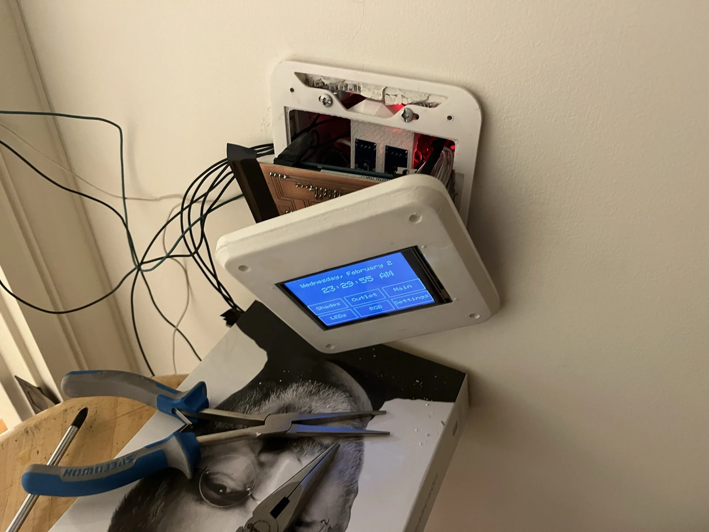

Budget e-bike conversion kit
Custom motor control, a printed hub motor, and a simple goal: make electric transportation more accessible.
An Arduino-based home controller, from exposed prototype wiring to a wall-mounted display and enclosure.

Full build documentation is on the way.
The build photographs trace a home-controller prototype from an Arduino and small motor to an integrated wall-mounted unit with a display and custom enclosure. A full account of the control functions and development process will follow.
Select any photo to open the full-size gallery.


Custom motor control, a printed hub motor, and a simple goal: make electric transportation more accessible.